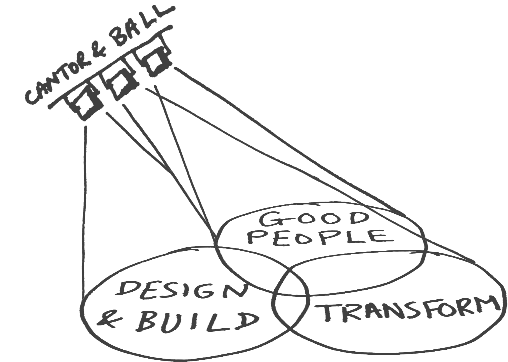

Technology can be transformative

We use our profit to grow sustainable businesses that make the world a better place.
It all starts with a conversation, so let’s talk…
We use our profit to grow sustainable businesses that make the world a better place.
It all starts with a conversation, so let’s talk…
Cantor & Ball is one of a small number of UK SME's who have been central to the growth of, and delivery behind the Government Digital Service.
Cantor & Ball has helped us answer challenges facing new organisations in the agile digital space, including scaling agile organisations, defining product management practices and assisting multi-functional development teams.
Cantor & Ball's ambition is to be a dynamic and responsible business.
We factor in not just economic, but social and ecological thinking into all our business decisions, be it taking on a new client or utilising a new service in house. But it’s more than that.
It’s about impact.
We put our profits into turning ideas for social good into sustainable businesses. We help incubate them, and get them to the tipping point of sustainability.
Good ideas can come from anywhere, so if you have an idea you’d like to explore, let’s talk.
We are inspired by people who have made the world a better place, regardless of their own limitations. Of the many names on this ever growing list, we keep two names close to our hearts.
Hugo Ball
As the author of the first Dada manifesto, Hugo Ball’s influence on us is immense. We value thinking, irreverence, the ridiculous and everyday Dada. Particularly, we strive to never confuse man with machine — nearly a hundred years on from Hugo’s observations on World War 1...
‘The war is founded on a glaring mistake, man has been confused with machine.’
Georg Cantor
Arguably the inventor of modern mathematics, with his definition of set theory, transfinite arithmetic and much else, we are inspired by the logic and philosophy in Cantor’s approach to problem solving. We believe it's important to think past innate beliefs with a problem, because despite the paradoxes often uncovered, the best solution is not always the obvious one.
We are based in London, UK but we can & do work anywhere.
Company Number 7796213
VAT Registration Number GB 121 6096 42